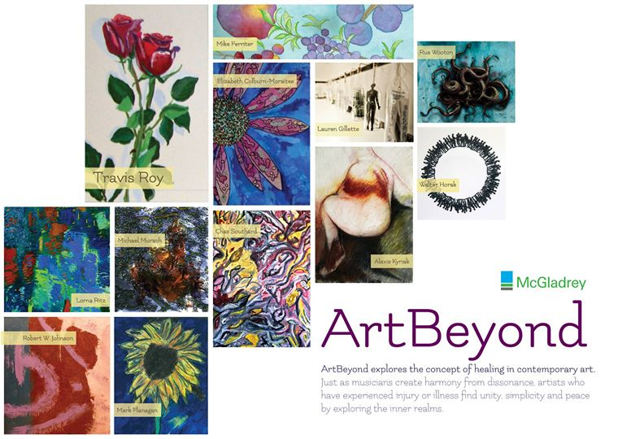
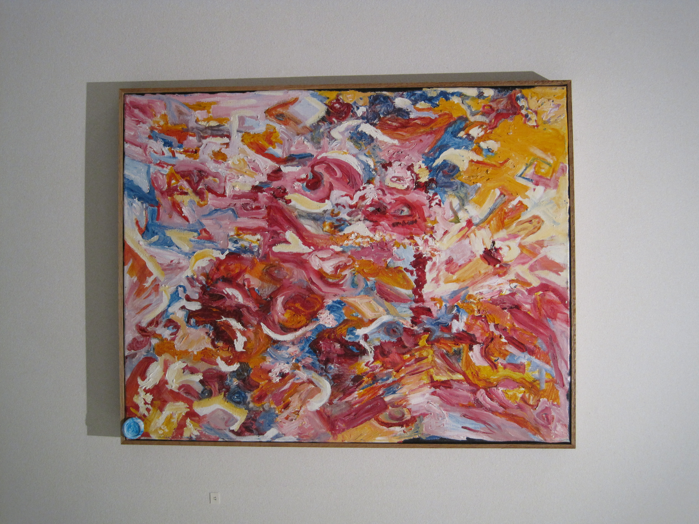
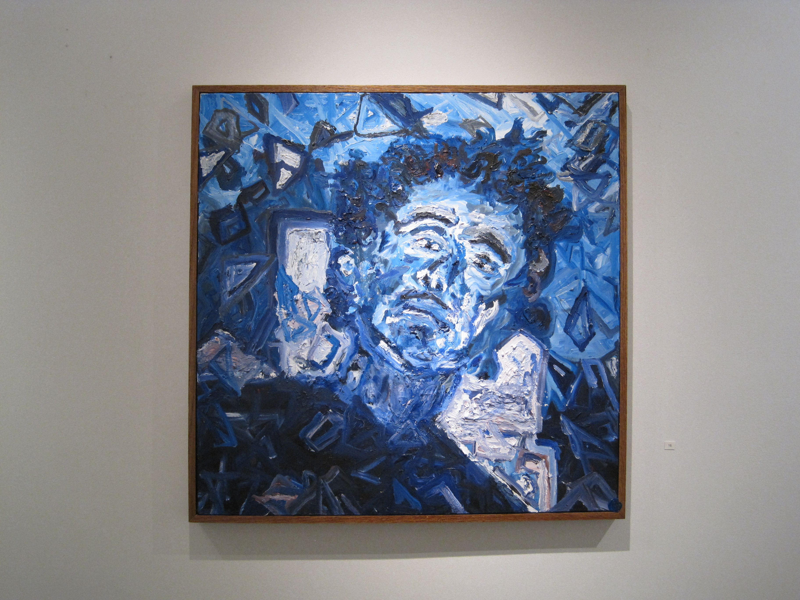
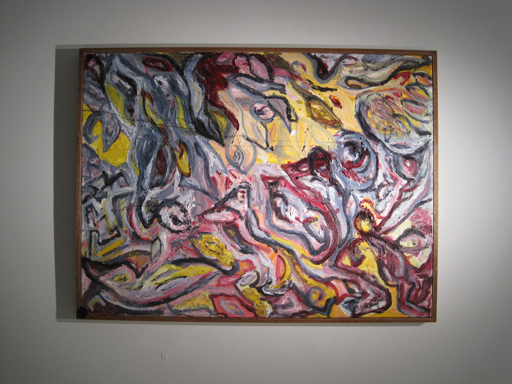
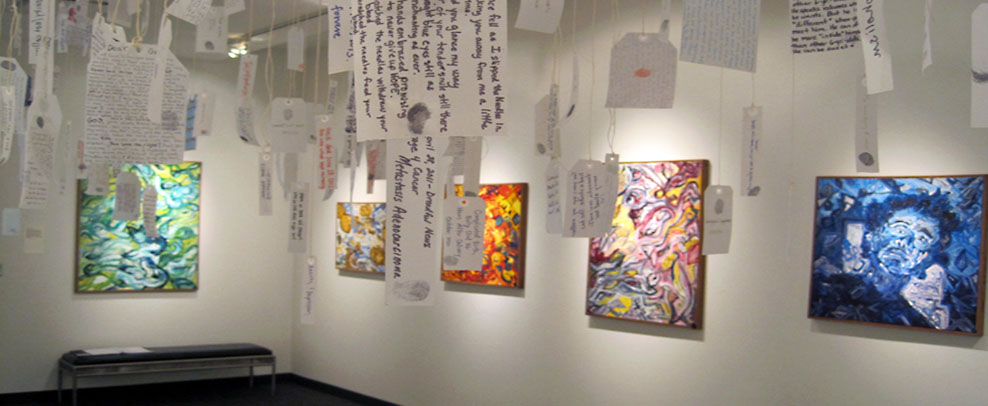
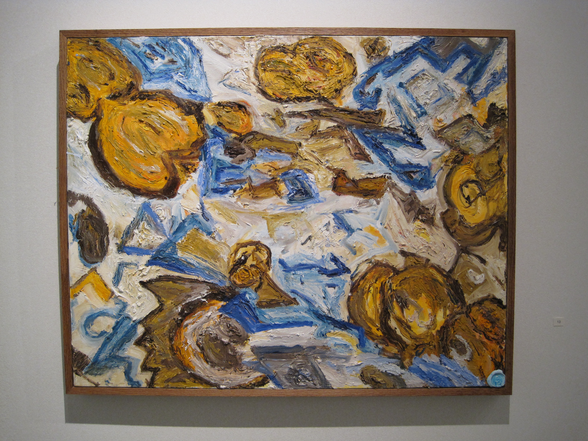
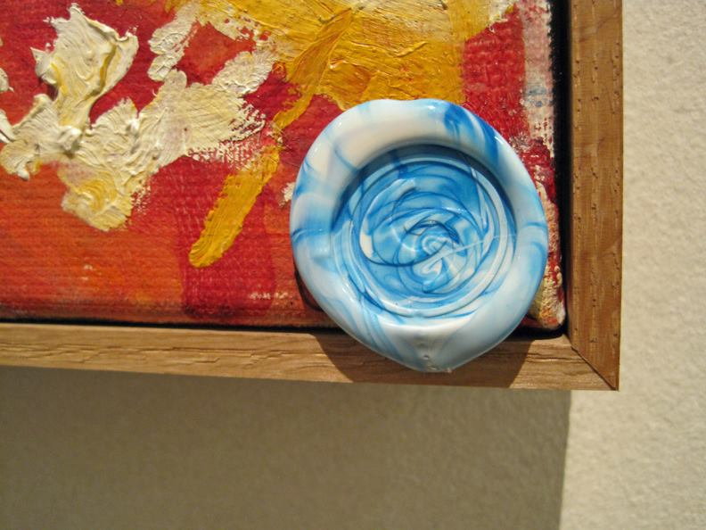

ArtBeyond Boston, MA 2013
Gallery Invitation

Gallery Photos
     
Artist Statement Boston 2013
Chaz Southard's vibrant, mellifluous abstract expressionist style is inspired by midcentury masters, hieroglyphics and textiles with an added energetic dose of jazz fusion. A spinal injury was the catalyst of his visual creations and led to an existential quest to find beauty and solace through creation.
His artwork has been displayed at several North Shore Massachusetts galleries. Chaz continues to paint with the aspiration of creating work that brings the viewer into a space of curiosity and imagination.
Press links
Boston Magazine : "ArtBeyond Exhibit Celebrates Art as Therapy"
Travis Roy Foundation : "Artbeyond Gallery Opening"